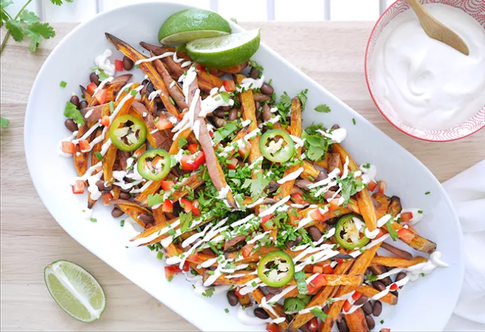

Loaded Sweet Potato Fries

Description
I was in the mood for something like a stuffed sweet potato, but changed my mind at the last minute and decided to turn this recipe into fries instead. I know. I’m wild and crazy sometimes.
Ingredients
- 4 medium sweet potatoes, sliced into long fry shapes
- 1-2 tbsp coconut oil
- 2 tablespoons minced garlic
- ½ red pepper diced
- 1 ripe avocado
- 2 limes
- ½ c cooked black beans
- ¼ c chives or green onions, chopped
- ¼ c cilantro (or parsley) chopped
- 1 jalapeno, thinly sliced (optional)
- ¼ c basic cashew cream (use 1 whole lemon instead of ½)
- Sea salt and fresh pepper
Directions
- Preheat oven to 425F and line baking sheet with parchment paper.
- Toss sweet potatoes with liquid coconut oil (you may need to warm it first) + a few good pinches of salt and pepper.
- Arrange in single layer on baking sheet and cook for about 30 minutes until lightly browned – tossing once, halfway through cooking.
- While fries cook, mash the avocado with juice of one lime and a few pinches of salt and pepper. This can be used to dip the fries into.
- Make cashew cream.
- Top with veggies, beans, a few squeezes of lime and drizzle of the cashew sour cream or use as a dip on the side.